IEEE C37.118 protocol
Description of the IEEE C37.118 protocol and its implementation in the Typhoon HIL toolchain.
Protocol introduction
The C37.118 standard defines a method for exchange of synchronized phasor measurement data between power system equipment. It specifies messaging including types, use, contents, and data formats for real-time communication between Phasor Measurement Units (PMU), Phasor Data Concentrators (PDC), and other applications.
Synchrophasor definition
Phasor representation of sinusoidal signals is commonly used in AC power system analysis. The sinusoidal waveform is defined by the equation below:
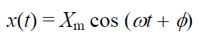
The synchrophasor representation of the signal x(t) in the equation is the value where φ is the instantaneous phase angle relative to a cosine function at the nominal system frequency synchronized to UTC.
Under this definition, φ is the offset from a cosine function at the nominal system frequency synchronized to UTC. A cosine has a maximum at t = 0, so the synchrophasor angle is 0 degrees when the maximum of x(t) occurs at the UTC second rollover (1 PPS time signal), and –90 degrees when the positive zero crossing occurs at the UTC second rollover (sin waveform). Figure 1 illustrates the phase angle/UTC time relationship.
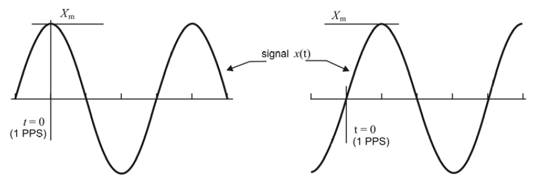
Frequency and ROCOF definition
PMUs following the C37.118 standard must be capable of reporting frequency and ROCOF (Rate Of Change Of Frequency). ROCOF is defined by the equation:
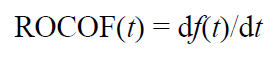
Measurement time tag from synchrophasors
Synchrophasor measurements must be tagged with the UTC time corresponding to the time of measurement. This consists of three numbers: a second-of-century (SOC) count, a fraction-of-second (FRACSEC) count, and a message time quality flag. The SOC count shall be a count of seconds from UTC midnight (00:00:00) of January 1, 1970, to the current second.
Synchrophasor transmission
Synchrophasor estimates are made so they can be reported (transmitted) as data frames at a rate Fs that is an integer number of times per second or integer number of seconds per frame as illustrated in Table 1.
| System frequency | 50 Hz | 60 Hz | |||||||
|---|---|---|---|---|---|---|---|---|---|
|
Reporting rates (Fs - frames per second) |
10 | 25 | 50 | 10 | 12 | 15 | 20 | 30 | 60 |
The actual reporting rate can be self-defined. Support for other reporting is permissible, and higher rates such as 100 frames/s or 120 frames/s and rates lower than 10 frames/s such as 1 frame/s are encouraged.
Message framework
- Data messages are the measurements made by a PMU
- Configuration is a machine-readable message describing the data types, calibration factors, and other meta-data for the data that the PMU/PDC sends. Three configuration types are specified: CFG-1, CFG-2, and CFG-3. CFG-1 and CFG-2 are part of the version 1 (IEE Std C37.118-2005) message set, and the optional CFG-3 is introduced with the version 2 (IEE Std C37.118-2011). CFG-1 denotes the PMU/PDC capability, indicating all the data that the PMU/PDC is capable of reporting. CFG-2 indicates measurements currently being reported (transmitted) in the data frame. CFG-3 is similar to the other configuration frames and contains much of the same data but with added information and flexible framing. CFG-3 indicates measurements currently being reported in the data frame (the same as CFG-2). CFG-3 has variable length fields, added PMU and signal information, and an extendable frame.
- Header information is human readable descriptive information sent from the PMU/PDC but provided by the user
- Commands are machine-readable codes sent to the PMU/PDC for control or configuration
- A PMU or PDC may transmit multiple data streams, each with different content, rate, format, etc. Each data stream shall have its own IDCODE so that the data, configuration, header, and command messages can be appropriately identified. Each stream shall be independently operable including command execution and data, header, and configuration messages.
Message frames
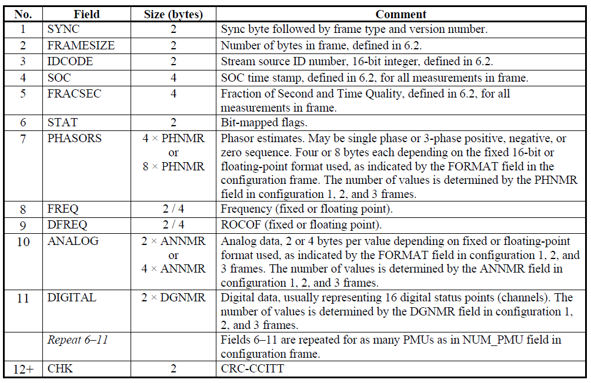
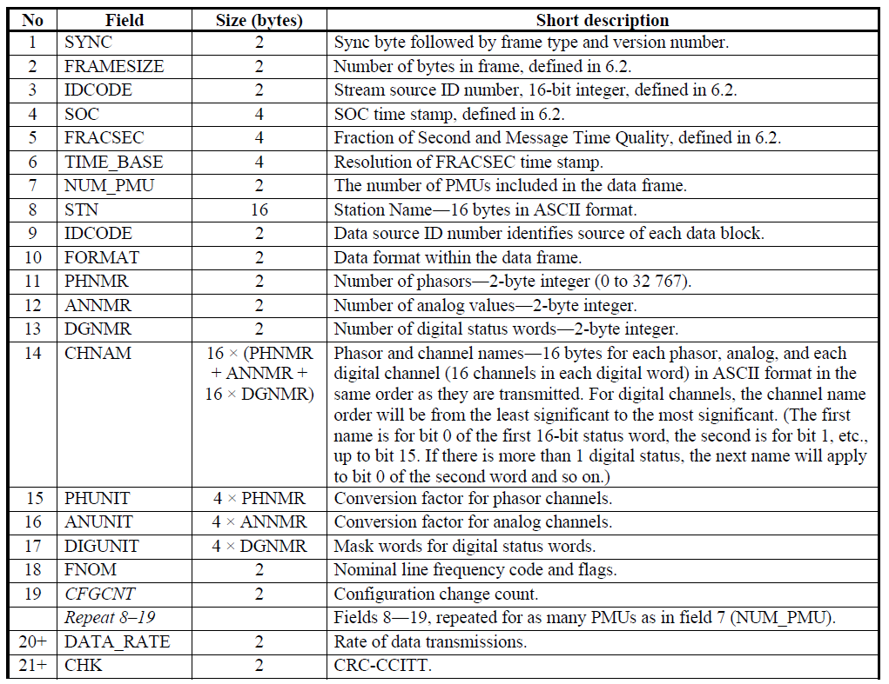
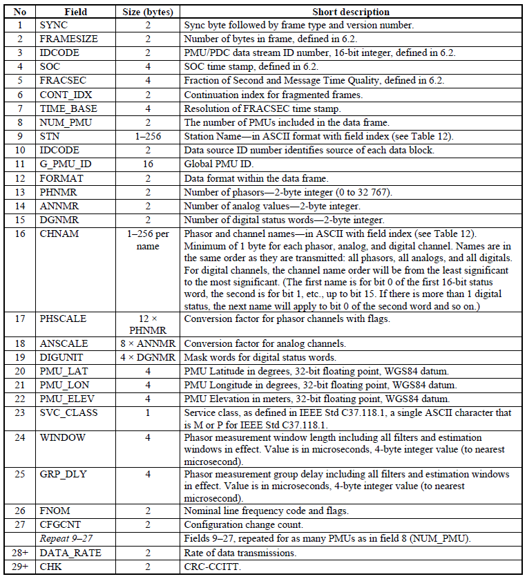
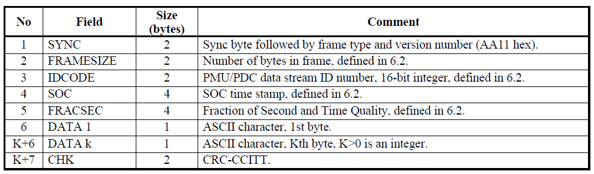
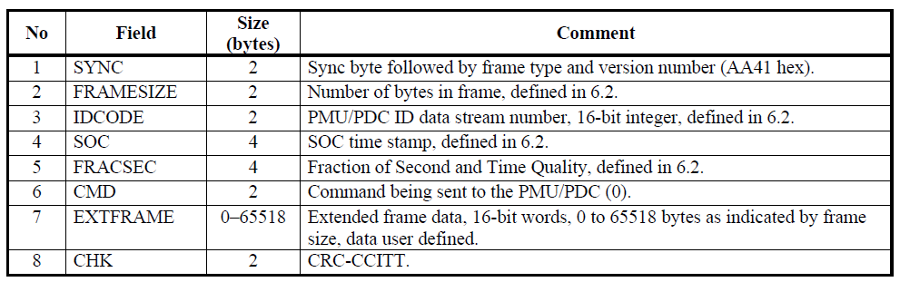
C37.118 communication scenario
The communication between PMU and Data Collector is illustrated in Figure 7.
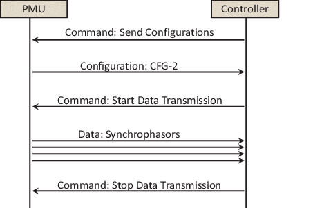
- After the controller connects to the PMU server, it must retrieve the PMU configuration by sending the Configuration request frame.
- The PMU responds by sending the Configuration 2 frame. The controller uses the information from this frame to decode the data.
- After the Configuration 2 frame is received, the controller sends the request to start the data transmission.
- The PMU starts transmitting data at specified rate.
- The controller accepts and decodes the data form PMU.
- After some time, the controller sends the request to stop the transmission.
- The PMU stops transmitting data.
Communication methods
The common methods for communication are as follows:
- Client-server. The device providing data is the server and the device receiving data is the client. The device providing data can be a PMU, a PDC, or any other device that will output synchrophasor data. The device receiving data can be a PDC or any or other device that receives synchrophasor data. In cases where data transmission is initiated by command, the client initiates contact and controls data flow with commands
- Basic modes of operation: spontaneous and commanded. With spontaneous, the server sends data by UDP to a designated destination without stopping, whether a receiving device is present or not. The stream is initiated by a function in the device accessed separately from data operations. With commanded operation, the server only sends data when a client requests it using the standard Start and Stop commands. Both modes may support commands to retrieve configuration and header data.
C37.118 protocol in the Typhoon HIL toolchain
In the Typhoon HIL toolchain, C37.118 protocol is implemented using PMU Send and PMU receive components. The PMU Send implements a server that sends synchrophasor data on request, whereas PMU Recive implements a client that connects to the server and can request the data. C37.118 protocol is supported by the following Typhoon HIL devices: HIL402, HIL101, HIL404, HIL602+, HIL604, HIL506, and HIL606.
Synchrophasor data can be sent either using TCP or UDP protocol.
The transmission of data frames is synchronized with the system time, ensuring that each set of messages, corresponding to the data transfer rate, starts at the beginning of a second. Each message in the set is then sent at a precisely specified time interval, with a new set beginning at the start of each subsequent second. Within the data frame (Figure 2) there are fields SOC and FRACSEC which define the time of message transmission. In addition, within the 16-bit field STAT, bits 8 to 6 represent the PMU Time Quality, as illustrated in Figure 8. This 3-bit code signifies the maximum uncertainty in the measurement time at the moment of measurement.
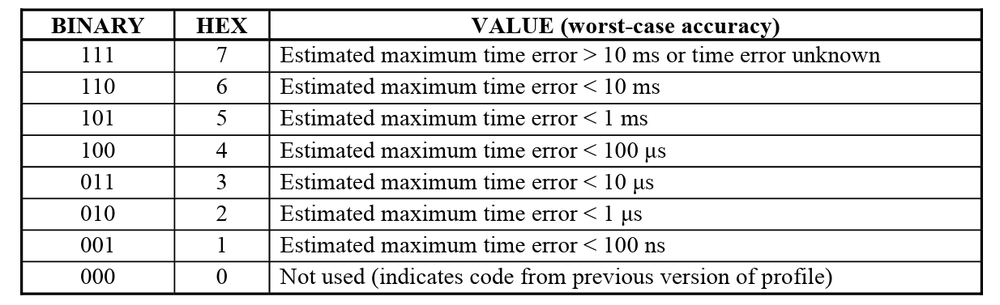
More information about system time synchronization can be found in the Time synchronization usage section
PMU Send
The PMU Send component implements a server that sends synchrophasor data on request. The data can be sent either using TCP or UDP protocol.
When using TCP protocol, the server can accept up to 15 independent clients connections. Once a client connects, it can request a Configuration 2 frame, Configuration 3 frame, Header frame, and/or start and stop data sending.
- The Unicast method accepts the request from the client and then sends the data only to that client.
- The Broadcast method accepts the request from the client and then sends the data to everyone on the network using broadcast IP address of 255.255.255.255. Using Broadcast, multiple clients can be served simultaneously.
- In Spontaneous mode, the server sends synchrophasor data automatically when the simulation is started. The client can request the Configuration 2, Configuration 3, and Header frames at any time but cannot stop data sending. The sending is stopped only when the simulation is stopped.
- In Commanded mode, the server behaves as illustrated in Figure 7, as described before. The server waits for the client request and sends data only when asked to do so.
Since PMU Send supports both CFG-2 and CFG-3 frames, it will send data according to the last requested Configuration frame. If the Client requests CFG-2, the Server will send data according to the CFG-2 specification. If the Client switches to CFG-3, so will the Server.
The PMU Send component icon and dialog window are shown in Table 2.
| Icon | Dialog window |
|---|---|
|
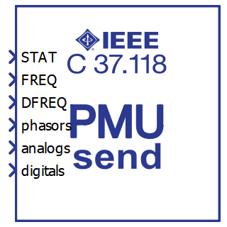 PMU Send |
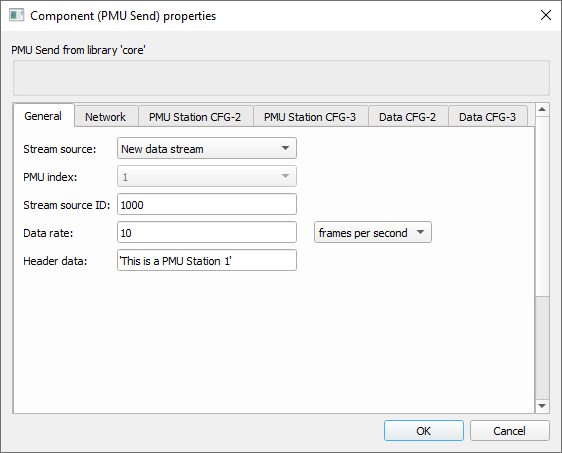 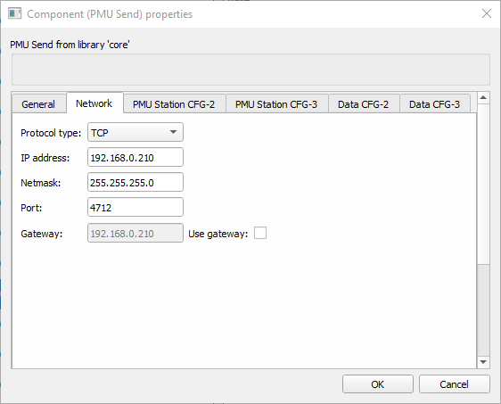 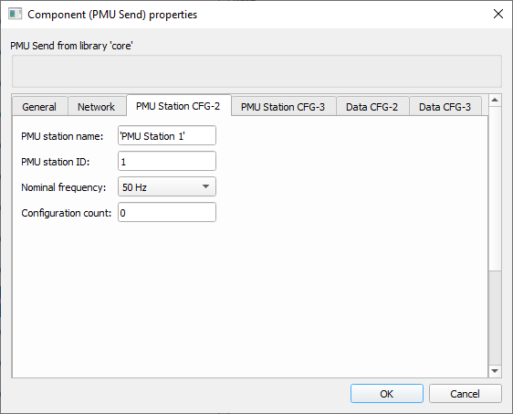 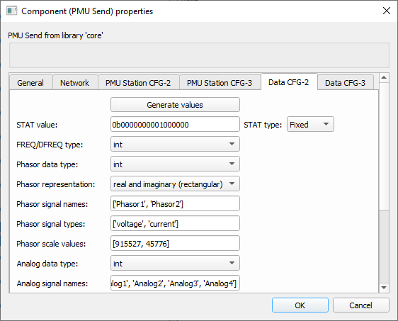 |
The PMU Send component properties are described in Table 3.
| Tab name | Property name | Description |
|---|---|---|
| General | Stream source | Each data stream can have multiple PMU data. This property defines if the component creates a new data stream or if it should append data to an existing stream. |
| PMU index | Choose the index inside the stream on which the PMU data will be stored. | |
| Stream source ID | Unique ID of the data stream. | |
| Data rate | Choose how often the data will be sent. | |
| Data rate type | Choose if the data is sent multiple times per second or if it is sent once every N seconds. | |
| Header data | Human readable string that will be reported on Header frame request. | |
| Choose existing stream | Defines which stream to append data to when the Stream source is set to Append to existing data stream. | |
| Network | Protocol type | Choose between TCP and UDP protocol |
| IP address | IP address of the server (in TCP mode) | |
| Netmask | Netmask value | |
| Port | Port value (in TCP mode) | |
| Gateway | Define gateway if needed | |
| Use Gateway | If check box is True, gateway will be enabled | |
| Operation mode | Choose between Spontaneous and Commanded mode | |
| Communication type | Choose between Unicast or Broadcast communication | |
| Local port | Define local port value (in UDP mode) | |
| Remote port | Define remote port value (in UDP mode) | |
| Destination IP address | Define destination IP value (in UDP mode) | |
| PMU Station CFG-2 | PMU Station name | Defines the PMU Station name |
| PMU Station ID | Defines the unique PMU Station ID | |
| Nominal frequency | Choose between 50 or 60 Hz for nominal frequency. | |
| Configuration | Defines the configuration number | |
| PMU Statinon CFG-3 | PMU Station name | Defines the PMU Station name. The property is the same as in CFG-2 but the number of characters can be up to 256 |
| PMU Station global ID | Global PMU ID. This 128-bit value (defined as a hexadecimal number) is a user-assigned value that uniquely identifies a PMU in a system that has more than 65535 PMUs. | |
| PMU station coordinates | Coordinates of the PMU device. The value is defined as a list with the values for latitude, longitude, and elevation. Latitude and longitude are defined in degrees and elevation in meters. | |
| Service class | Defined as P for Performance or M for Measurement. | |
| Window | Phasor measurement window length including all filters and estimation windows in effect. Value is in microseconds (us). | |
| Group delay | Phasor measurement group delay including all filters and estimation windows in effect. Value is in microseconds (us). | |
| Data CFG-2 | Generate values | Pressing the button will present an additional dialog window that allows the user to specify the data values in more intuitive manner. |
| STAT type | Choose if STAT value will be specified using a signal from the model or if the value will be fixed. Choosing Variable will generate an additional terminal on the component that lets you connect the signal from the model. | |
| STAT value | Specify the fixed STAT value | |
| FREQ/DFREQ type | Choose between integer or floating point type for FREQ and DFREQ data | |
| Phasor data type | Choose between integer or floating point type for Phasor data | |
| Phasor representation | Choose the representation of Phasor signals. The Phasors can be specified using real and imaginary representation or magnitude and angle. | |
| Phasor signal names | Define the Phasor names | |
| Phasor signal types | Define the Phasor signal type. Phasor can be either voltage or current. | |
| Phasor scale values | Define the Phasor signal scaling. | |
| Analog data type | Choose between integer or floating point type for Analog data | |
| Analog signal names | Define the Analog signal names | |
| Analog signal types | Define the Analog signal type. Signal type can be single point, rms, peak or user defined. In case of user definition, signal type is defined by a number between 65 and 255. | |
| Analog scale values | Define the Analog signal scaling | |
| Digital signal names | Define the Digital signal names | |
| Digital signal normal state | Define the Digital signal normal state of operation | |
| Data CFG-3 | Generate values | Pressing the button will present an additional dialog window that allows the user to specify the data values in more intuitive manner. |
| Phasor signal names | Same as Phasor signal names in CFG-2 but each name can have up to 256 characters. | |
| Phasor modification flags |
Flags that indicate the type of data modification when data is
being modified by a continuous process. Bits are defined as:
|
|
| Phasor signal types | Same as Phasor signal type in CFG-2 | |
| Phasor components |
Phasor component that can be:
|
|
| Phasor user defined types | Integer number available for user designation (0 - 255) | |
| Phasor scale values | Defines the scaling value Y for the Phasor 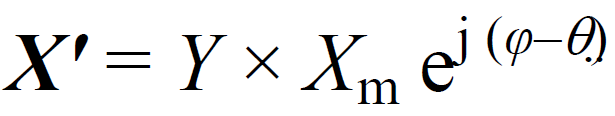 . If Phasors are represented in floating point format and already scaled, this value should be set to 1.0. |
|
| Phasor offset values | Defines the offset value θ for the Phasor . If Phasors are represented in floating point format and the offset is already applied, this value should be set to 0.0. | |
| Analog signal names | Same as Analog signal names in CFG-2 but each name can have up to 256 characters. | |
| Analog scale values | Defines the scaling value M for Analog value 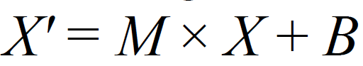 . |
|
| Analog offset values | Defines the offset value B for Analog value . |
Regardless if the rectangular or polar representation is selected for Phasor signals, data connected to the input of the PMU Send component should be provided in magnitude and angle representation, where angle is specified in degrees. The input data is then transformed according to the selected representation and stored in the message frame.
When connecting Phasor signals to the PMU Send component, values must provide the magnitude first, followed by the angle. If three Phasors are defined, six values must be defined in order [Ph1 mag, Ph1 ang, Ph2 mag, Ph2 ang, Ph3 mag, Ph3 ang]. This can be observed in Figure 9.
Phasor scaling is used to define the resolution of Phasor data. For the CFG-2, the value is represented as a 16-bit integer, so the magnitude value can range from -32767 to +37265. In some cases this is not enough, so scaling is needed. Scaling is calculated based on the maximal allowed Phasor value. For example, if the maximal allowed magnitude is 300 kV, the scaling is calculated:
Scale = (Max Phasor value / 32768) x 10e5= 300000 / 32768 x 100000 = 915527
Scale for an Analog signal is simply a multiplier; it is only necessary to specify the value by which the Analog value is multiplied.
PMU Send example
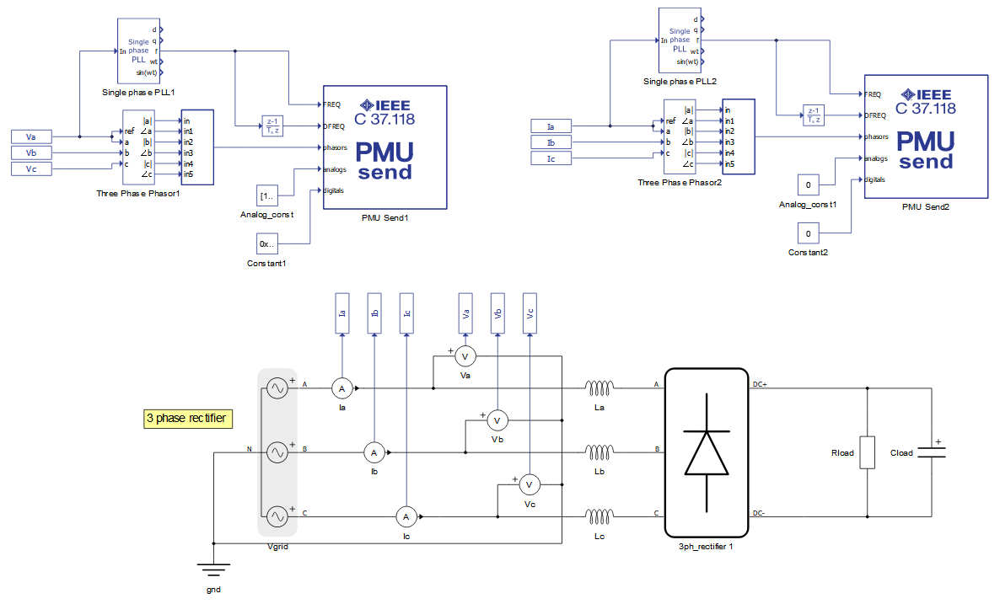
In this example, a simple three-phase source and rectifier is used. Grid voltages and currents are measured and sent using the C37.118 protocol. The two PMU Send components are used to form one data stream. The PMU Send 1 component is configured to create a new data stream with ID 1000, and the PMU Send 2 component is configured to append data to an existing stream. This configuration is shown in Figure 10. The configuration of data is also presented.
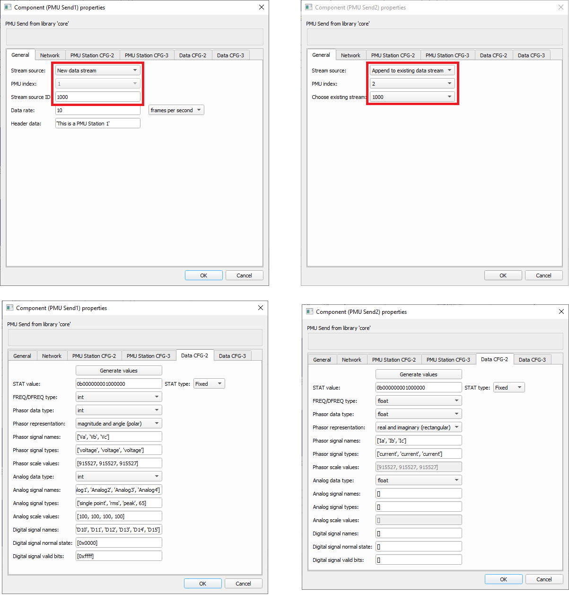
The PMU Send 1 component sends Voltage Phasors, 4 analog signals and 1 Digital word. All signals are defined as integer. The PMU Send 2 component sends only Current Phasors in floating point representation. For both components, the nominal frequency is 50 Hz and STAT value is fixed.
Wireshark was used to capture the message on the network, with the results shown in Figure 11.
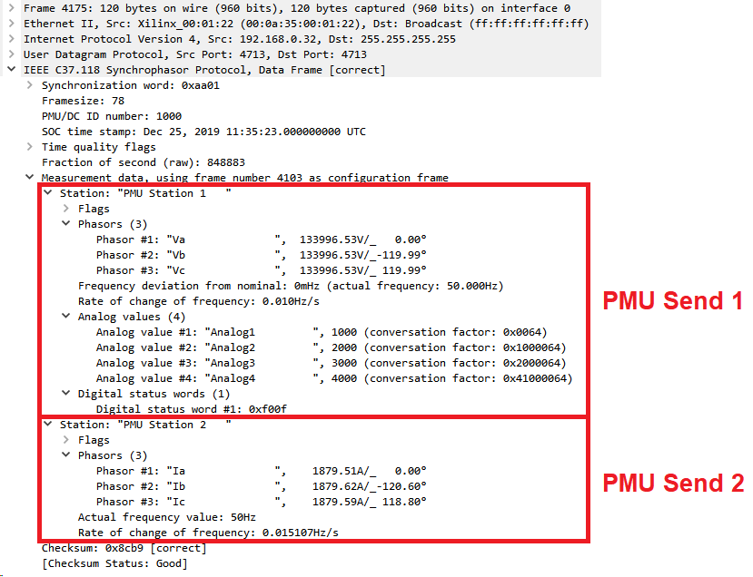
PMU Receive
PMU Receive implements a client that connects to PMU Server and sends the request frames. The request can be sent either using TCP or UDP protocol.
The PMU Receive component can work in auto start mode. When the simulation starts, the client will try to connect to the server immediately. If the connection is successful and auto start mode is enabled, the client will automatically send the request for a CFG-2/CFG-3 frame, when the frame is received, and a start data sending request. If auto start mode is not active, these requests must be sent manually.
PMU Receive component icon and dialog window is shown in Table 4.
| Icon | Dialog window |
|---|---|
|
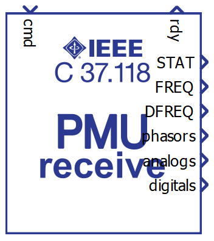 |
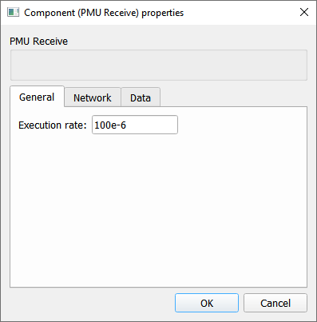 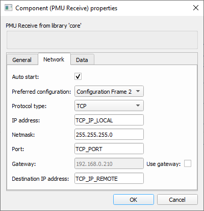 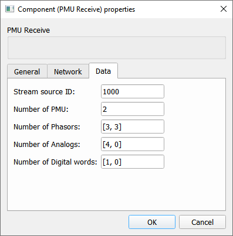 |
The PMU Receive component properties are described in Table 5.
| Tab | Property name | Description |
|---|---|---|
| General | Execution rate | Execution rate of the PMU Receive component |
| Network | Auto start | If the property is selected, the client will automatically connect to server and send the requests for Configuration 2 frame and start data transmission. |
| Preferred configuration | Define what Configuration frame is requested from the Server. | |
| Protocol type | Choose between TCP and UDP protocol | |
| IP address | IP address of the server (in TCP mode) | |
| Netmask | Netmask value | |
| Port | Port value (in TCP mode) | |
| Gateway | Define gateway if needed | |
| Use Gateway | If check box is True, gateway will be enabled | |
| Local port | Define local port value (in UDP mode) | |
| Remote port | Define remote port value (in UDP mode) | |
| Destination IP address | Define destination IP value | |
| Data | Stream source ID | ID of the stream source to receive |
| Number of PMU | Number of PMU Stations in the received data frame | |
| Number of Phasors | Number of Phasors per PMU Station | |
| Number of Analogs | Number of Analogs per PMU Station | |
| Number of Digital words | Number of Digital words per PMU Station |
The Dimension of output signals from PMU Receive component is dictated by the Number of PMU property value. The values will be scalars if Number of PMUs is 1 and vector otherwise. The Phasor output is always vector and the dimension is Number of PMU x 2.
When receiving Phasor data, the output signal will be packed as a pair of Phasor magnitude and Phasor angle values. For example, if Number of PMU is 2, the phasor output value will be [Ph1 mag, Ph1 ang, Ph2 mag, Ph1 ang].
Regarding the PMU Server Phasor representation, whether the Phasors are represented in rectangular or polar mode, the output values will be magnitude and angle, where angle is in degrees.
FREQ, DFREQ, Phasor and Analog output values are always of floating point type. Digital signal output are represented with integer.
Additional terminal labeled RDY will output 0 if client is not connected to the server and 1 if the connection is established.
- 0 - idle state where no command is sent
- 1 - command to connect with the server
- 2 - send the request for Configuration 2 frame
- 3 - send the request to Stop sending data
- 4 - send the request to Start sending data
- 5 - send the request for Configuration 3 frame
If Auto start option is enabled in PMU Receive component, the client will automatically send commands 1, 2(5), and 4.
When the simulation is started, the client must first receive the CFG-2/CFG-3 frame to successfully receive the Data frames. Otherwise, the Data frames are ignored.
PMU Receive example
The example illustrates the client that receives messages sent by the PMU Server from the example in Figure 9.
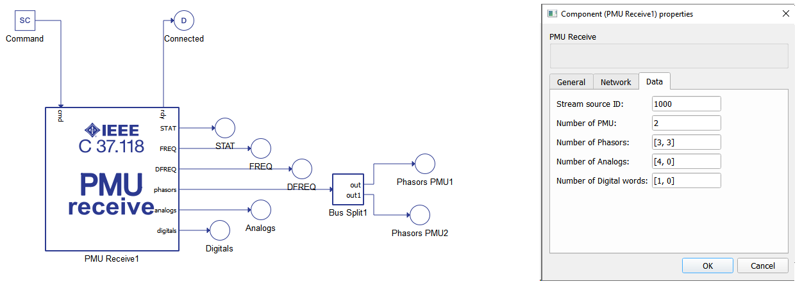
The Bus Split component can be used to split values between the PMU Station in a similar way as a Phasor output.
Virtual HIL support
Virtual HIL currently does not support this protocol. When using a non-real-time environment (e.g. when running the model on a local computer), inputs to this component will be discarded and outputs from this component will be zeroed.
References
- IEEE Standards Association, IEEE Power & Energy Society, "IEEE Standard for Synchrophasor Data Transfer for Power Systems", IEEE Std C37.118.2TM-2011, December 2011, pp. 1-26